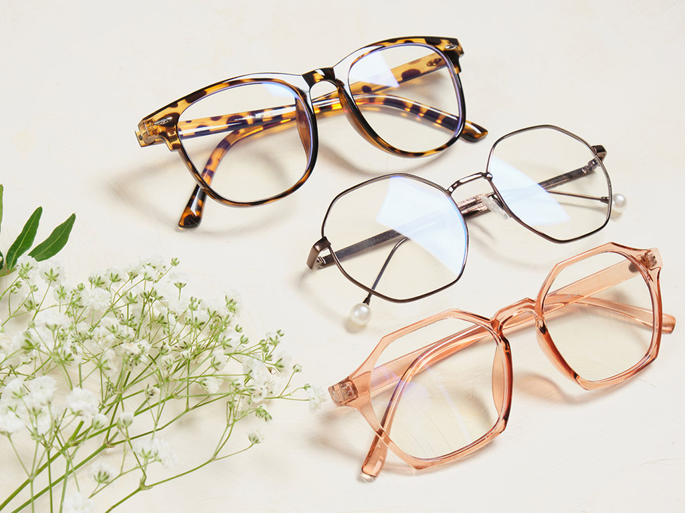

L'acquisto di un nuovo paio di occhiali non è una cosa da poco.
Quando si entra in un negozio si viene sommersi da una quantità incredibile di modelli: dimensioni, forme e colori diversi.
Come si fa a scegliere la montatura adatta a noi?
Sei nel posto giusto!
In questa guida troverai consigli pratici per escludere i modelli sbagliati e valorizzare i tuoi lineamenti.
Prendi uno specchio, guardati e seleziona la forma che più corrisponde al tuo viso: